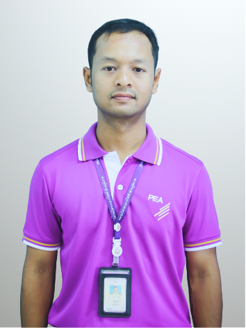

นายนัฐพงศ์ พรหมมาก
ชผ.ปร.กฟส.พระแสง กฟส.เวียงสระ กฟจ.สุราษฎร์ธานี กฟต.2
ข้อมูลโดยย่อ
วิศวกรไฟฟ้าที่มุ่งมั่นส่งมอบพลังงานไฟฟ้าที่มีคุณภาพตามมาตรฐานให้กับลูกค้า โดยผสานความรู้ด้านวิศวกรรมเข้ากับเทคโนโลยีสารสนเทศภูมิศาสตร์ (GIS) เพื่อพัฒนาระบบจำหน่ายไฟฟ้าและกระบวนการทำงานอย่างต่อเนื่อง
ประวัติการทำงานที่ผ่านมา
- 2568 ผู้ช่วยหัวหน้าแผนก ผปร.กฟส.พระแสง
- 2565 วิศวกรระดับ 6 ผกป.กฟส.อ.พระแสง
- 2562 วิศวกรระดับ 5 ผกป.กฟส.อ.พระแสง
- 2559 วิศวกรระดับ 4 ผกป.กฟส.อ.พระแสง
การศึกษา
ระดับปริญญาตรี
วิศวกรรมศาสตรบัณฑิต สาขาวิศวกรรมไฟฟ้า
เกียรตินิยม อันดับ 1
คณะวิศวกรรมศาสตร์ มหาวิทยาลัยสงขลานครินทร์
ผลงานเด่นที่ผ่านมา
รางวัล วิศวกรดาวรุ่ง ชมรมวิศวกร กฟภ. ปี 2568
ได้รับการคัดเลือกจากชมรมวิศวกร สาขา กฟต.2 เป็นวิศวกรดาวรุ่ง ประจำปี 2568
รางวัล The Best Practice การประยุกต์ใช้งาน PEAGIS Portal PEA WSC 2568
ได้รับรางวัลจากการแข่งขันทักษะการปฏิบัติงาน ประจำปี 2568 ระดับ กฟต.2
และเป็นตัวแทน กฟต.2 เข้าร่วมแข่งขันในระดับองค์กร
รางวัล เหรียญทอง PEA WSC 2565 ประเภท การวิเคราะห์ปัญหาคุณภาพไฟฟ้า
ได้รับรางวัลเหรียญทองจากการแข่งขันทักษะการปฏิบัติงาน ประจำปี 2565 ในระดับองค์กร
วิทยากรฝึกอบรมผู้ปฏิบัติงานด้านระบบไฟฟ้า กฟภ.
ถ่ายทอดความรู้พื้นฐานเกี่ยวกับไฟฟ้า สาเหตุ และการป้องกันอันตรายจากไฟฟ้า
ถ่ายทอดความรู้ OJT
ถ่ายทอดความรู้ด้านงานสำรวจ ออกแบบ และประมาณการ ให้พนักงานช่างสำรวจในพื้นที่ จ.สุราษฎร์ธานี
พัฒนางานด้วยเทคโนโลยีดิจิทัล
สนใจการนำ Web Application, GIS, API และฐานข้อมูล มาใช้แก้ปัญหางานจริง
เช่น ระบบอยู่เวร Standby และระบบวิเคราะห์อุปกรณ์ป้องกันบน GIS เพื่อช่วยลดขั้นตอนการทำงาน
เพิ่มความถูกต้องของข้อมูล และสนับสนุนการตัดสินใจของผู้ปฏิบัติงาน
ทักษะ และความสนใจ
- คุณภาพไฟฟ้า
- ระบบป้องกันระบบไฟฟ้ากำลัง
- GIS
- Web Application
- การพัฒนากระบวนการทำงาน
ข้อมูลการติดต่อ
โทรศัพท์: 086-2705734
อีเมล: nattapong.phr@pea.co.th
ที่อยู่: 236 ม.1 ต.อิปัน อ.พระแสง จ.สุราษฎร์ธานี 84210